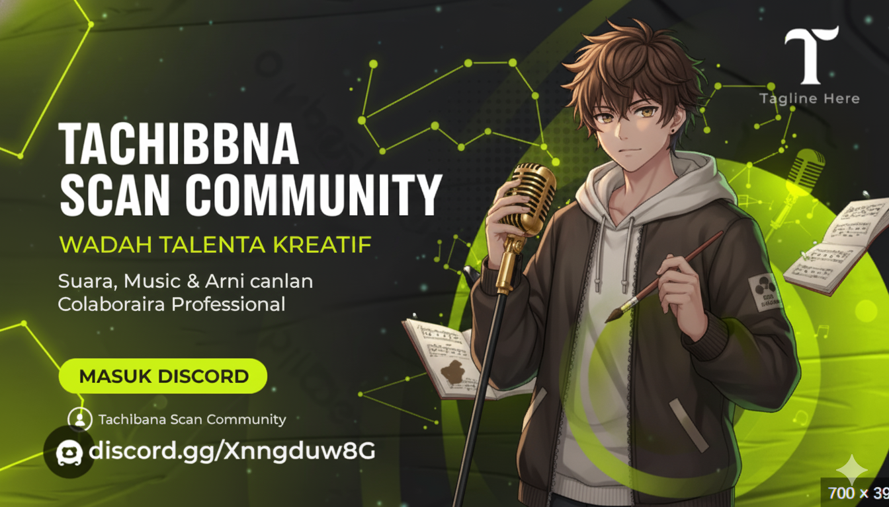

Tentang Kami
Wadah Kolaborasi Profesional
Tachibana Scan Community adalah lounge digital bagi para kreator. Kami fokus pada pengembangan bakat di tiga pilar—Vocal Performance, Voice Acting, dan Fan Art—dengan lingkungan yang suportif dan profesional.
Pelajari Lebih Lanjut0
Talenta Aktif
0
Divisi Utama
0
Member server
Divisi Kami
Fokus Kreatif
🎤 Vocal Performance
Mengasah teknik, harmoni, dan ekspresi vokal melalui cover lagu dan proyek kolaboratif.
🎧 Voice Acting
Menghidupkan karakter. Dari *dubbing*, narasi, hingga drama suara orisinal.
🎨 Fan Art & Desain
Galeri untuk para artisan digital, dari ilustrasi karakter hingga desain grafis komunitas.
Siap Berkolaborasi?
Lounge kami di Discord selalu terbuka untuk talenta baru.
Masuk ke Discord Lounge